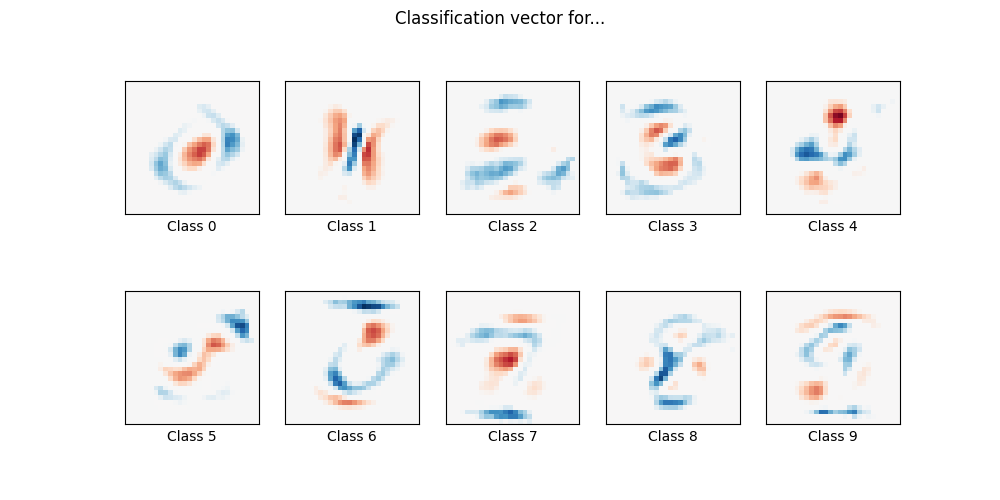

Note
Go to the end to download the full example code or to run this example in your browser via Binder
MNIST classification using multinomial logistic + L1¶
Here we fit a multinomial logistic regression with L1 penalty on a subset of the MNIST digits classification task. We use the SAGA algorithm for this purpose: this a solver that is fast when the number of samples is significantly larger than the number of features and is able to finely optimize non-smooth objective functions which is the case with the l1-penalty. Test accuracy reaches > 0.8, while weight vectors remains sparse and therefore more easily interpretable.
Note that this accuracy of this l1-penalized linear model is significantly below what can be reached by an l2-penalized linear model or a non-linear multi-layer perceptron model on this dataset.
Sparsity with L1 penalty: 74.57%
Test score with L1 penalty: 0.8253
Example run in 4.123 s
# Author: Arthur Mensch <arthur.mensch@m4x.org>
# License: BSD 3 clause
import time
import matplotlib.pyplot as plt
import numpy as np
from sklearn.datasets import fetch_openml
from sklearn.linear_model import LogisticRegression
from sklearn.model_selection import train_test_split
from sklearn.preprocessing import StandardScaler
from sklearn.utils import check_random_state
# Turn down for faster convergence
t0 = time.time()
train_samples = 5000
# Load data from https://www.openml.org/d/554
X, y = fetch_openml(
"mnist_784", version=1, return_X_y=True, as_frame=False, parser="pandas"
)
random_state = check_random_state(0)
permutation = random_state.permutation(X.shape[0])
X = X[permutation]
y = y[permutation]
X = X.reshape((X.shape[0], -1))
X_train, X_test, y_train, y_test = train_test_split(
X, y, train_size=train_samples, test_size=10000
)
scaler = StandardScaler()
X_train = scaler.fit_transform(X_train)
X_test = scaler.transform(X_test)
# Turn up tolerance for faster convergence
clf = LogisticRegression(C=50.0 / train_samples, penalty="l1", solver="saga", tol=0.1)
clf.fit(X_train, y_train)
sparsity = np.mean(clf.coef_ == 0) * 100
score = clf.score(X_test, y_test)
# print('Best C % .4f' % clf.C_)
print("Sparsity with L1 penalty: %.2f%%" % sparsity)
print("Test score with L1 penalty: %.4f" % score)
coef = clf.coef_.copy()
plt.figure(figsize=(10, 5))
scale = np.abs(coef).max()
for i in range(10):
l1_plot = plt.subplot(2, 5, i + 1)
l1_plot.imshow(
coef[i].reshape(28, 28),
interpolation="nearest",
cmap=plt.cm.RdBu,
vmin=-scale,
vmax=scale,
)
l1_plot.set_xticks(())
l1_plot.set_yticks(())
l1_plot.set_xlabel("Class %i" % i)
plt.suptitle("Classification vector for...")
run_time = time.time() - t0
print("Example run in %.3f s" % run_time)
plt.show()
Total running time of the script: (0 minutes 4.172 seconds)